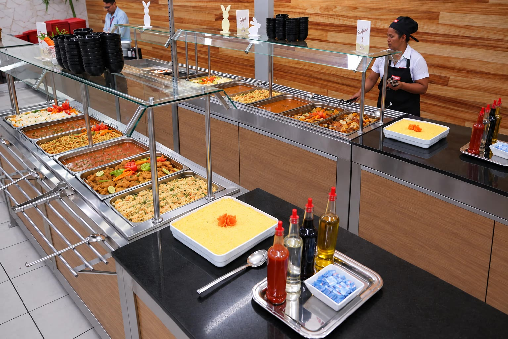
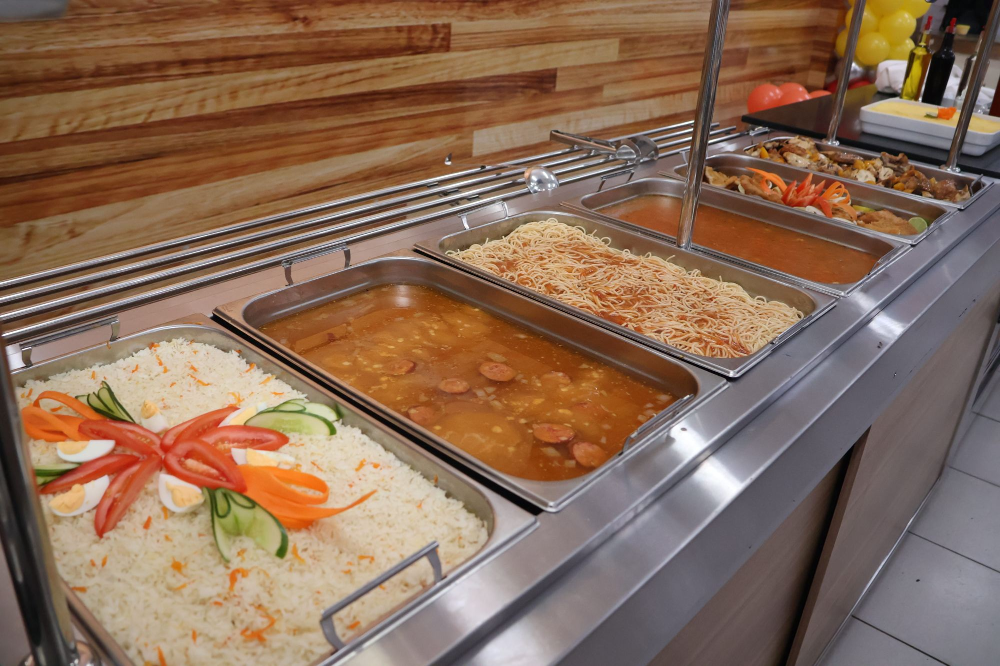
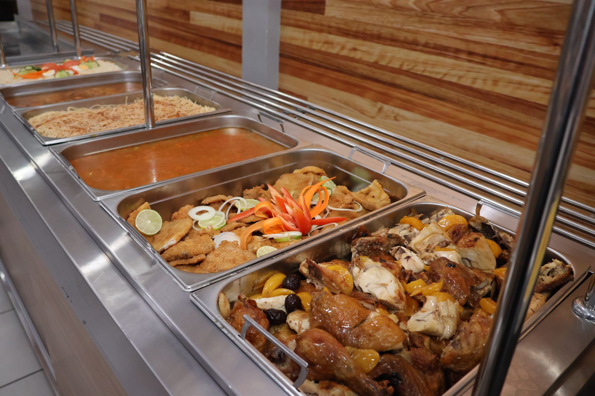
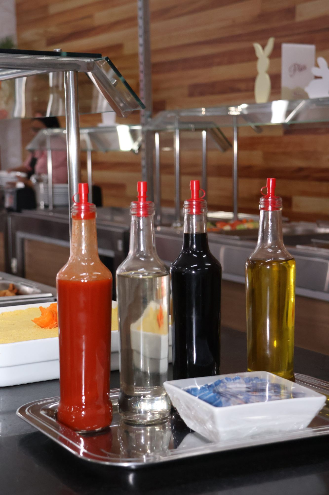

01Refeições no local
Operamos a cozinha e o refeitório dentro da sua empresa, com equipe MASF e preparo no dia.
- Equipe própria e uniformizada
- Preparo diário com insumos frescos
- Distribuição no padrão da sua empresa

Da refeição servida na sua empresa ao evento de fim de ano: montamos a operação ideal para a sua realidade.
Operamos a cozinha e o refeitório dentro da sua empresa, com equipe MASF e preparo no dia.
Saiba maisProdução em cozinha própria e entrega no horário de cada turno, com controle de temperatura.
Saiba maisAdministração completa: compras, estoque, equipe, higienização, controles e relatórios.
Saiba maisRefeição diferenciada, com preparações especiais para valorizar o momento da equipe.
Saiba maisDesjejum, lanches e ceia para quem trabalha em turnos, do primeiro ao último horário.
Saiba maisCoffee breaks, confraternizações, SIPAT e treinamentos — onde a MASF começou.
Saiba maisEm 30 segundos, acompanhe um dia de operação MASF: a montagem do buffet, o cuidado no preparo, o atendimento e as refeições prontas para entrega.

01Operamos a cozinha e o refeitório dentro da sua empresa, com equipe MASF e preparo no dia.
Produção em cozinha própria e entrega no horário de cada turno, com controle de temperatura.

03Administração completa: compras, estoque, equipe, higienização, controles e relatórios.

04Refeição diferenciada, com preparações especiais para valorizar o momento da equipe.
Desjejum, lanches e ceia para quem trabalha em turnos, do primeiro ao último horário.
Coffee breaks, confraternizações, SIPAT e treinamentos — onde a MASF começou.
Conhecemos a sua empresa, os turnos, o número de refeições e a estrutura disponível.
Apresentamos cardápio, modelo de serviço e investimento adequados à sua realidade.
Equipe, equipamentos e processos prontos, com transição planejada e sem interrupções.
Pesquisas de satisfação, indicadores e melhoria contínua do serviço.
Se a sua dúvida não estiver aqui, fale com a nossa equipe comercial.
Atendemos principalmente indústrias do Distrito Industrial de Manaus e empresas de diversos segmentos na cidade, com operações de pequeno a grande porte.
Sim. Oferecemos café da manhã, almoço, jantar e ceia, acompanhando a jornada de trabalho de cada empresa.
Sim. Nesse caso indicamos as refeições transportadas, produzidas em nossa cozinha e entregues no horário de cada turno.
Nossas nutricionistas elaboram cardápios balanceados e variados, de acordo com o perfil dos colaboradores, e o cardápio é alinhado com o cliente.
Sim. Mediante planejamento com a nossa equipe de nutrição, oferecemos opções para restrições alimentares.
Preencha o formulário da página de contato ou fale pelo WhatsApp. Nossa equipe agenda uma visita técnica para entender a sua necessidade.
Nossa equipe faz uma visita técnica e indica o melhor modelo, sem compromisso.